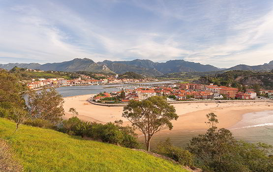

|  | Se trata de espacios de tamaño relativamente pequeño con un alto Interés, y su finalidad es proteger ecosistemas, comunidades o elementos biológicos que por su rareza, fragilidad, importancia o singularidad merecen una mención especial. Se encuentran aquí, fundamentalmente, cuevas y rías con sistemas dunares. Precisamente, Asturias es un territorio que destaca por sus numerosas cuevas y grutas, en cuya entorno se generan ecosistemas naturales y culturales absolutamente cautivadores, y muy interesantes para aquellos viajeros ávidos de aventura y de sensaciones diferentes, vinculadas a la pureza de lo natural. También las rías con dunas son lugares de especial belleza y donde la flora y fauna característica de la zona emerge con inusitada presencia. |